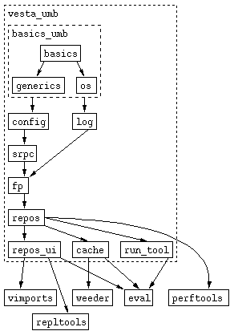

How to Port Vesta to a new Platform
Author:
|
Ken Schalk <ken@xorian.net>
(based on the method first described by Tim Mann)
|
Date:
|
Last modified: Mon Mar 7 12:47:01 EST 2005
|
Introduction
Vesta is a software build system that is built using itself. This
document describes a boot-strapping approach to porting Vesta, which is
the way all ports have been done so far. In brief, the steps involved
are:
- Use Vesta on a currently working platform to "host" the port. Set
up to run tools on the porting target through remote execution (using rsh
or ssh).
- Construct a build environment (std_env) for the porting
target system type.
- Work through building and testing the Vesta constiuent libraries
and component tools for the new platform (as with porting any other software
system).
Target Platform
Requirements
Vesta should be readily portable to any UNIX-like platform. Specifically,
the features most neccessary for a Vesta port are:
- An NFS client. The Vesta repository's filesystem is presented
through an NFS v2 interface. Both building and editing in checkout
sessions use this interface.
- The chroot system call. Vesta's builder uses the chroot
system call to encapsulate the filesystem used by each build step.
- C and C++ compilers. Vesta is written primarily in C++, with
a few components written in C.
- A garbage collector for C/C++. Vesta ports working as of
this writing use
the Boehm
collector (which already supports many platforms), but it may
be possible to use other garbage collectors.
- Support for POSIX threads (pthreads). Both the Vesta
servers and clients use multi-threading. In most cases an abstraction
layer (part of the basics library) is used, so other multi-threading
APIs may also be usable with additional effort.
Ports to non-UNIX platforms may be possible, but would require much
more work. For example, one could get by without the
chroot system call if there were a way to intercept all
filesystem I/O operations (perhaps through clever uses of dynamic
linking) and redirect them to an encapsulated
filesystem. Another possibility would be using a virtual
machine to provide encapsulation. Similarly, one could imagine
adding support for a different network filesystem protocol to the
repository.
Alternative Approaches
The boot-strapping approach described below is, of course, not the only
way to port Vesta to a new platform. However, it is the method that
has been used for all ports completed as of this writing. Also, we feel
that it's no more difficult than any of the alternatives.
Here are some brief notes on alternative approaches:
- Using a coss-compiler. This requires making a cross-compiling
build environment (std_env) for executing tools on an already-working
platform and building for the target of the port. Creating a native
build environment for the target platform is a significant amount of the
work of any complete port of Vesta (where Vesta can be built using itself
on the target platform). Therefore, this is probably more work than
the boot-strapping approach. However, if you intend to cross-compile
for the target platform using Vesta anyway, this may be no extra work.
- Using another builder (e.g. make). We have
recently put together
a method for automatically generating
make build instructions for Vesta (or other C/C++
programs built using Vesta). You can find several
make-based source kits of Vesta
available for download at
SourceForge.
The main problem with this approach is that it doesn't
avoid the cost of constructing a build
environment for the target platform (although it does
allow one to delay it). A port cannot really be
considered complete until Vesta can build itself with all
components running on the new platform (which necessitates
constructing a new build environment). Also, it means
that during the port one has to work without the benefits of
Vesta itself.
- Using binary compatibility/emulation to run the Vesta binaries from
a working platform on the target platform. This may be possible in some
cases. However, Vesta's use of features such as garbage collection (which
usually makes highly platform-specific assumptions) and pthreads (which uses
system calls that may not be properly handled under a compatibility layer)
may make this approach difficult or impossible.
Steps to Port by
Boot-strapping
Install Vesta on the
Host Platform
See the document "Getting Started With Vesta" for instructions on how to
install it.
The host will run all the Vesta servers, daemons, and clients until enough
progress has been made to get those components functioning on the target platform.
Set Up the Target as
a Vesta Client
You'll need to have the machine running the target platform meet the requirements
for a Vesta client node. Specifically, it will need to:
- Share user and group information with the Vesta server (e.g. via NIS).
- Mount the directory where the Vesta servers store their data (/vesta-srv)
- Be given permission to acces the repository (in the repository's export
file)
- Have the repository mount points (/vesta and /vesta-work)
Port vmount and Mount the Repository on the Target Platform
The repository provides an NFS server interface. However, because
it is not part of the normal OS-provided NFS server infrastructure, it can't
be mounted with the normal methods (e.g. the mount(8) command or
an entry in /etc/fstab). Instead, a small program called vmount
is used to make the appropriate mount system call.
This program is small, written in straight C, and its source can be found
in the
vmount package. There are currently variants for:
The general approach is to take a copy of one of these and modify it
to work on the target platform. (Unfortunately, the mount interface
for NFS is not always well documented, which can make this step non-trivial.)
Once vmount compiles correctly on the target platform, the repository
can be mounted. You can invokve vmount directly, but an easier
way to mount the repository is to modify a copy of the
mountrepos script, adding defaults for all variables set by calling
vgetconfig. For example:
NFS_host=`vgetconfig Repository NFS_host || echo "vesta.example.com"`
NFS_port=`vgetconfig Repository NFS_port || echo 21774`
AppendableRootName=`vgetconfig UserInterface AppendableRootName || echo "/vesta"`
MutableRootName=`vgetconfig UserInterface MutableRootName || echo "/vesta-work"`
VolatileRootName=`vgetconfig Run_Tool VolatileRootName || echo "/vesta-work/.volatile"`
Of course the script may also need other minor modifications to work on
the target platform (e.g. the Linux-specific use of "mount -f").
Port the
tool_launcher
The tool_launcher is a small program which is responsible for making
the chroot system call to encapsulate the filesystem used by a build step.
Like vmount, it is small and written in C. Unlike vmount,
building it for the target platform should be quite easy. (It's straightforward
POSIX code, and doesn't even contain a single platform-specific #if
as of this writing.)
Its source can be found in the
run_tool package. Specifically, there are two source files
needed to compile it: tool_launcher.c,
and Launcher.h.
Build this for the target platform and make it setuid root (so that it can
execute the chroot system call).
Set Up Remote Tool Execution
The RunToolServer is the daemon which accepts requests to execute
tools and invokes them in an encapsulated environment. When invoking
a tool it executes the tool_launcher. The location of the
tool_launcher executable is set by the configuration setting [Run_Tool]helper.
Because of this configurability, we can run a RunToolServer
on the host platform with [Run_Tool]helper set to
a script which executes the
tool_launcher on the target platform using rsh or
ssh. (This method is sometimes referred to as "the
rsh hack".) You should do this in a separate
configuration file that starts by including your normal configuraiton
file and then adds overrides, like so:
// Include the normal vesta.cfg
[include /etc/vesta.cfg]
// Add overrides for remote tool execution
[Run_Tool]
helper = /foo/bar/run_remote_tool.sh
//...
Before you start this RunToolServer, simply set the VESTACONFIG
environment variable to point to this alternate configuration file.
The RunToolServer must also be configured to report that it is of
the host type of the target platform. This can be done by using other
configuration variables in the [Run_Tool] section. Their values
replace those normally acquired from the hose operating system. For
example, if the target platform is a PowerPC Linux system:
[Run_Tool]
sysname = Linux
machine = powerpc
release = 2.4.18
version = #1 Tue Oct 8 13:33:14 EDT 2002
In most cases appropriate settings can be determined by running this simple shell script on
the target platform.
You will probably also need to change the port that the RunToolServer
runs on, which is controlled by [Run_Tool]SRPC_port. (If you're
not running a RunToolServer to run tools on the host platform, this
is not be neccessary.)
Lastly, you'll need to add a section to your normal vesta.cfg which indicates
how to contact the RunToolServer for the target platform. Before doing
this you'll need to chose a "platform name", which is just a string used
to identify the system type needed to execute a tool request from the evaluatore.
Continuing with the above example, if the platform name chosen was "Linux2.4-PPC",
the platform section might look like this:
[Linux2.4-PPC]
sysname = Linux
release = 2.4.*
version = *
machine = powerpc*
cpus = 1
cpuMHz = 0
memKB = 0
hosts = vesta.example.com:21786
Once you've set this up, you should test it with a simple model that executes
a program on the target platform. A good simple test is to run a statically
linked "hello world" program on the target platform. Continuing with
the above example, an SDL model for testing the RunToolServer might look
like this:
files
hello_static;
{
. = [ root = [ .WD = [ hello_static ],
dev/null = 0x0103,
boot/kernel.h = "" ],
envVars = []
];
return _run_tool("Linux2.4-PPC", <"hello_static">);
}
Once this simple test works correctly, you can move on to the next step of
preapring a full build environment for the target platform.
It's worth noting that there is some minor loss of functionality when using
rsh. rsh doesn't propagate the exit status of the
remote command. It simply returns successful status if the command
is executed on the remote host. This causes the evaluator to cache
the tool invocation as though it were successful. To handle this situation
a little better, the C/C++ bridge has an option to not cache tool invocations
which write to standard error (by passing "report_nocache" for the
stderr_treatment argument of the _run_tool call). You
can turn this feature on in your top-level model like this:
. ++= [ C/options/cache_stderr = FALSE,
Cxx/options/cache_stderr = FALSE ];
Construct a Build Environment for the
Porting Target
The build environment (also called the "standard environment" or std_env)
encapsulates all the files needed to perform compilations on a platform (compiler
binaries, library archives, etc.) as well as the SDL code needed to run them
to perform high-level operations (e.g. "construct an executable program from
these C++ source files").
The general approach is to create a set of "OS component" or "kit"
packages, each of which contains a set of files from the target
operating system. When the OS has a component packaging system,
it's probably easiest to use its granularity. (For Linux we've
constructed build environments from both sets of RPM files and sets of
Debian packages.) With a little scripting, the process of
importing these OS components can usually be automated. You can
find scripts which have been used to import RPMs, Debian packages, and
Tru64 subsets in this Vesta package (which is available for
replication from
pub.vestasys.org):
/vesta/vestasys.org/vesta/extras/pkg2vesta
In
cases where licensing restrictions disallow binary redistribution (and thus
replication of a build environment), making scripts for importing packages
available may be quite helpful for others wishing to build for the same target
platform.
The bridges (code which insulates the average SDL writer from making
individual tool invocations) usually require only minimal changes to
work on a new platform. If using a different compiler suite
(not the GNU C/C++ compiler), you may need to make changes to the
c_like bridge.
The remainder (the top-level std_env model, the handling of various
libraries) is written by hand, but is fairly small. (The x86 Linux
std_env is under 500 lines total, over 150 of which is comments.)
In general, studying one of the existing build environments and using it
as an example is the best approach.
Once you believe you have a working std_env for your porting target, you
should test it by building some simple programs (such as the "hello world"
examples in /vesta/vestasys.org/examples). Once those build
correctly you can move on to building the low-level components of Vesta.
Port and Test Vesta
At this point you can simply work your way through the various
libraries and programs that make up Vesta. As with any other
porting project, you'll probably need to make some code changes to get
it to compile. Once the components compile, they'll require some
testing to verify that they're funcitoning correctly on the new
platform. Here is an illustration of the dependencies between
the different components:

Many of the packages come with test programs which can help you determine
whether they are functioning correctly.
Some notable milestones in the progress of a port:
- Once you get the config library working, you should be able
to start using vgetconfig on the porting target, and thus be able
to use the normal mountrepos script.
- When the RunToolServer works on the target platform, you can
dispense with the remote tool execution method described above.
- When the repos_ui programs work, you can perform repository
operations (e.g. checkout, checkin) from the porting target.
- When the evaluator works, you can run builds on the porting target.
(Alernating between the host and porting target platforms is a good
idea, to make sure that cache entreis are correctly shared between them.)
Once all components seem to run on the target platform, you should try
a more extensive test of Vesta. You can find a Perl script that
can be used to test the most common aspects of Vesta in this package
(which is available for replication from
pub.vestasys.org):
/vesta/vestasys.org/vesta/extras/testing
(The script itself does have a few platform-specific pieces that may
also need some work on a new platform.)
Potential Problem Areas
There are, of course, a few areas that could cause trouble in a port,
and are worth mentioning.
64-bit Integers
Vesta was developed on a 64-bit platform. In several places, its
source code relies on having a 64-bit integer type. (See the definitions
of the types Basics::int64 and Basics::uint64 in Basics.H.)
So far, we've simply used the "long long" type provided by
the GNU C/C++ compiler on 32-bit platforms. If you need to use another
compiler for some reason, this could be a problem.
In addition to a 64-bit integer type, a few parts of the Vesta code also
need to format 64-bit integers with the printf/sprintf
family of functions. On Linux, we've used glibc's "ll"
length specifier. (See the definition of the FORMAT_LENGTH_INT_64
in Basics.H.) This may prove difficult or impossible with
other C run-time libraries, necessitating more significant changes.
pthreads Quirks
When porting Vesta to Linux, we had to make some changes to accomodate
its implementation of pthreads:
- The RunToolServer used to have one thread fork a
child process and then have a different thread call waitpid for
that child. Because Linux threads are really processes, only the forking
thread could wait for the child.
- Regardless of whether a program ever creates a new thread, just including
the pthread.h header changed the definition of errno (using
a pre-processor macro) to call a function. Because of the way that
function is defined, we had to pass a linker option to force the pthread
library to be linked into the executable. (Without doing this, any
access of errno by programs that don't create pthreads would crash.)
- The signal handler in the RunToolServer (for INT
and TERM) had to be changed to take action only in the main thread.
- The Boehm collector on Linux holds an allocation lock during blocking
reads. To avoid blocking on memory allocation while waiting on network
traffic, we had to insert a select before reading from a TCP socket.
Other implementations of pthreads will probably have subtle quirks
of their own requiring other changes.
NFS Client Quirks
Different NFS client implementations have subtle differences. Several
changes have been made to the repository's NFS implementation to adequately
support the Linux NFS client. Inter-operating with other NFS clients
may require additional changes.
Garbage Collection With Support for
Multi-Threading
The Boehm
garbage collector may not be well tested in multi-threaded
programs on all platforms. (In some cases it may not be
supported at all.) This is a neccessity for both the evaluator
and the cache server, which rely heavily on both multi-threading
and garbage collection.
Even if it is fully suppoted, there may be subtle issues to deal with (such
as the issue with blocking reads mentioned above).
OS-Specific
Information Gathering in RunToolServer and Cache
Server
The RunToolServer gathers some information about the hardware
it's running on. Specifically, it determines the number of CPUs, the
CPU clock speed, and the amount of physical memory. These values are
used to allow selection of the host to run tools on based on these details.
(In some cases, certain tool invocations may be known to use large
amounts of memory, and this can be used to avoid running those tools on machines
with less than a certain threshold of physical memory.)
The cache serve also gets informations from the operating system on how much
memory it is using (primarily for reporting to statistics gather clients
such as VCacheMonitor).
Both of these areas will require attention when porting to a new operating
system.
Troubleshooting Tips
When bringing up a new platform under Vesta, and particularly during
the development of its build environment, there are often some tricky
problems to deal with. This section provides a few hints on
debugging this kind of problem.
Tool Misbehavior
If tools such as the compiler or linker fail in unexpected ways, it
may be due to some file missing from the encapsulated filesystem.
The evaluator has
some debug
options which can be helpful in understanding such problems.
Specifically, the -evalcalls flag prints a message for each
attempted access in the encapsulated filesystem, including attempts to
access files that don't exist. This can often provide important clues
when something is missing from the tool invocation's root directory.
Additionally, the
RunToolServer has some debug capabilities controlled by
environment variables. (These require restarting the RunToolServer to
activate them.) The most useful is turned on by setting the
STOP_BEFORE_TOOL environment variable. This causes the
RunToolServer to print the path to the volatile directory just before
launching each tool and wait for the user to press return before
continuing. This allows one to examine the contents of the
encapsulated filesystem before the tool is executed. There's also
STOP_AFTER_TOOL which may also be helpful, plus a couple
others.
Evaluator Misbehavior
It's possible that you may find that
the evaluator
behaves incorrectly on a new platform. Here are a few suggestions on
debugging such problems:
-
Turning off the evaluator's multi-threading capabilities (with
"-maxthreads
1" or by setting
[Evaluator]MaxThreads
to 1) can make the evaluator's behavior more predictable. While this
probably won't solve problems, it may make them easier to debug.
-
The
"-trace"
option may be useful in understanding the caching behavior of an
evaluation, including one that's not working correctly.
-
You can prevent the evaluator from adding new entries to the cache
without turning off its use of existing entries in the cache with
"-noaddentry".
-
You can completely turn off the evaluator's use of the cache server
with
"-cache
none". This will definitely make evaluations take longer
(because they will re-do work), but if there's a bug in the interface
to the cache (including fingerprint computation or collection of
secondary dependencies), it could change the result of the evaluation.
There are also two intermediate caching options ("-cache
runtool" and "-cache model").
-
To get the complete details of the evaluator's interaction with the
cache server, use
"-cdebug
All".
Back to the Vesta home page